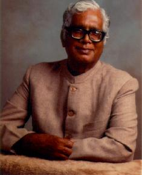
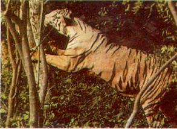

Jewel Among the People
Kunja Bihari Dash
Narrator : Udaya Nath Dash
I was nine years younger than the brother I called Kunja Bhaina. My earliest memory of him is that he used to bring "coras" (sweets) for me when he came back to our village, Rench Shasan, from the city of Bhubaneswar. I thought the coras were lying under trees. At the end of his vacation, I cried to go with him to Bhubaneswar. Our mother used to hold me until he was out of sight.
My brother claimed that he was the ugliest and dirtiest child, and that our eldest brother, Ghana Shyam was the favorite. He also claimed that he was the average village lad, neither clever nor courageous. He had few toys, but used to make some with coconut leaves and clay, and whistles with mango seeds. He molded statues of the mythical characters Rama, Laxmana, Seeta, and Ravana with ten heads. My father had no plans to educate him beyond primary school. But one day Ghana Bhaina fell sick at school in Bhubaneswar. Kunja Bhaina was asked to care for him. While he was there, a teacher asked why he was not in school. He said, "Our father could not afford to send two boys to school and I am helping him in the farm." The teacher asked some questions and found out that he was intelligent. He arranged for my parents to enroll Kunja Bhaina in the fourth grade with financial aid.
Kunja Bhaina was a reluctant pupil. He hid in the village when he was supposed to be at school, ate cucumbers that the teacher had asked him to collect for the class, and almost drowned just to get some candy. The teacher's brutal punishments would have been "child abuse," in today's terms. Kunja Bhaina scored far below passing in all subjects. His handwriting was terrible; before going to school, he had not written anything on paper, which was rarely available. His teachers and classmates began to think that he had little promise, but the headmaster arranged for upper-class students to tutor and discipline him.
The headmaster also made sure that Kunja Bhaina was admitted to a new high school that had recently been added to Nimapara middle school. My brother jumped up and down with joy when he heard that he was going to be the first from our village to go to high school. To pay the expenses of the dormitory, he traveled six miles daily to tutor a few students. Eventually, he got a job doing the marketing, cleaning, dish washing, cooking, and serving for one of his teachers. He had time to study only after everyone went to bed. I visited him in Nimapara. On a kerosene stove, he made *mohan bhog* for me, but he could not afford to eat that well all the time. He ate sprouted *mung* for breakfast.
He became an idealist, and opposed smoking, chewing tobacco, and killing chickens. He gave up fish for the next twelve years. He was always telling me to read. Once I said, "You must be dumb; you study all the time. I remember everything once I read it. Why should I study so much?" He laughed and said, "There are thousands of books. It will take many lifetimes to read all of them, let alone remember them. If you want to be big and famous, you must read as many books as possible." The philosophy of the Indian National Congress party attracted him, and he wore *khadi* (cloth made from homespun cotton thread). He got to see Mahatma Gandhi visit our district . Locals asked Gandhi to go to the Jagannath temple to visit the Lord, but he refused to enter the temple that denied the *Harijans* (untouchables) access.
Suddenly, our father died at the age of 52. Kunja Bhaina wanted to leave the worldly life and be a Sanyasi. In Puri he became a disciple of Sri Nigamananda. However, the Guru persuaded him to return to school. After he graduated in 1935, Ghana Bhaina asked him to look for a job, to help manage the household. But Kunja Bhaina wanted to go to college. He met Shree Madhu Sudan Dash, a famous lawyer, who arranged for him to tutor his 7-year-old grandson. With that lucky turn of events, my brother got admitted into Ravenshaw College in Cuttack, Orissa's only college at that time.
He studied history, logic, Oriya literature, Sanskrit, and English. Earning an Intermediate in Arts degree in two years, he began teaching at a new high school for a monthly salary of 25 rupees. The place was surrounded by mountains, with Chilika Lake nearby.He went hiking,watched the sun rise and set, and wrote about a bear. He had written during high school, but this was where his poetic instinct blossomed. In two months, he had enough money to return to college. He took a new tutoring job and stayed at his student's home. When I went to Cuttack, I was suffering from scabies but recovered with his care. He slept in one corner of the drawing room on a mat. In the daytime he had to roll his belongings into a bundle. His kerosene stove, rice, clothes, and mat shared that corner for three years. The next year he stayed in a dorm for 1 rupee per month, due to the superintendent's kindness. In 1939, he graduated from Ravenshaw College, which belonged to Patna University, in Bihar, as Orissa had no university at that time.
He failed to get a job after college. Because of his talent in Oriya literature, an advisor encouraged him to earn a master's degree in Oriya. He gathered the courage and money to go to Calcutta. He met Professor Binayak Misra, a published writer. With help from other Oriyas, he got a teaching job in a night school for 10 rupees monthly. He slept on the steps of an office building with janitors until some Oriya porters offered to share rooms with him. Kunja Bhaina took part in movements to unite Oriya parts of Bihar and Bengal with Orissa. He chaired the Utkal Sahitya Society, which set up a foreign branch in Bengal. He graduated first in the class, awarded with 200 rupees and three gold medals.
He then tutored a prince in Ranchi, Bihar. Kunja Bhaina enjoyed lots of traveling. He had written several poems and articles by this time, but we saw none of them. I recall cleaning boxes at home one day with Ghana Bhaina. We found a big book with no writing inside. On the top was scrawled, "Kunja Bihari Granthabali," meaning that from an early age he dreamed of being famous. We laughed.
At Mission Baptists High School, I stood first in the annual exam. Kunja Bhaina discovered that my grade was 100 marks higher than any other student's. He thought I needed better competition and advised me to transfer to P.M. Academy. He encouraged me to prepare for medical school, saying, "Are you not impressed with all the diseases and suffering surrounding us? Wouldn't you like to alleviate some of these?" He helped me financially and inspired me in letters. I graduated from Ravenshaw College, and was in the first batch of students in SCB Medical College, created in 1944.
At age 23, he received a marriage proposal from Puri, arranged by the famous Pandit Nilakantha Dash. Kunja Bhaina accepted it without ever seeing his nine-year-old fiancee. The week-long wedding took place a few weeks later. He stayed in his in-laws' house and met his wife, Nisamani (my Bhauja), four days after the wedding. She hardly spoke and replied timidly once every fifteen questions from my brother. They met again four years later when she came to our house to live. I teased Bhauja by putting frogs in her blouse and throwing rotten mangoes at her, but she liked me because I made her laugh. Kunja Bhaina tutored in the coal town of Talcher until landing a job teaching Oriya literature in a private college in Berhampur. He began living with Bhauja in a rented house. When a servant stole all of her ornaments, he had a few new ones made for her from two of his gold medals.
Wanting to learn more, my brother returned to Calcutta and earned a master's degree in Sanskrit. Just before his exam, he heard of Ghana Bhaina's death from malaria, at 34. He was wiping tears while taking the exam. He took a government job as Inspector, and later as Superintendent of Sanskrit literature, for Orissa. Despite heavy travel, he translated the *Rg Veda* from Sanskrit into Oriya. In 1947 he was appointed to teach Oriya literature in a college in Balasore. He organized a convention of Oriya literature, visited Ceylon (now Sri Lanka), and wrote about his travels. Communal disturbances followed the partition into Pakistan and newly independent India, but he did not suffer or go to jail like many others.
Finally, in 1950, my brother became Professor of Indology Post Graduate Research at Santiniketan, a university near Calcutta established by author Rabindranath Tagore. I visited Santiniketan and was impressed with its rows of trees, flowers, and plants. Its many buildings housed centers of studies of all Indian languages, and of Asian and European countries. Most of all, I was happy that my brother, after being kicked around like a football through various jobs, had found a wonderful place to stay. He had excellent teacher-student relationships. Santiniketan was for studies, but it was full of opportunities for music, arts, crafts, and dances of various cultures. It was ideal for my brother. His horizon of knowledge broadened immensely due to his association with talented people from all over the world.
He achieved much during his eleven years at Santiniketan. He felt fortunate when Pandit Jawaharlal Nehru handed him the certificate for his Ph.D. in Oriya. Kunja Bhaina was the prime mover in creating a separate Oriya department. He made his name as poet and author. His three sons thrived. He did not want to leave. So every year, when the Orissa government demanded his return, he made an excuse to stay. When politics compelled him to leave, he rejoined Ravenshaw College as a lecturer of Oriya.
My brother encouraged me to get the best medical training in the U.S.A., but he wanted me to serve my country. I had arranged to return to India but changed my mind after our mother died in 1956. I met my wife-to-be, Ira, in 1959 and wrote to my brother about her. He complained that she was not Oriya but was relieved that she was Indian. He felt much better after visiting Ira's parents. In the mid-1960's, he lobbied to represent India in a world cultural conference. After presenting a paper, "The Influence of Orissan Folklore on Oriya Society" at Indiana University, he stayed with us in St. Louis for three months. Kunja Bhaina had lots of fun with our three young children, trying to teach them Oriya. The children liked his sense of humor. They made fun of his voracious appetite for warm milk and fruits. We took a seventeen-day 5200-mile drive through the western U.S.A . He was enthusiastic about every new place. Each night he wrote about our experiences. Later when we saw his published travelogue of the U.S.A, Europe, and Africa, which enriched the Oriya literature, we felt that our trip was worthwhile.
When Kunja Bhaina returned to Ravenshaw College, he organized a movement to separate Oriya and Sanskrit into two departments. He was chosen to head the new Oriya department. He retired in 1979, built a house, Udayasree, and spent more time writing. After another trip to the U.S.A., with Bhauja in 1985, he published *America Revisited*. Sixty-eight books of his were published. The Central Literary Society of India named him Lokaratna (Jewel Among the People). Budding writers flocked to him. Every day, all day long in the front room of Udayasree, he received people from all walks of life.They wanted his blessings but also received tea and food from Bhauja.
He stayed very busy. When the villagers lamented that they lacked a good school, my brother suggested that we build a high school. I sponsored it on condition that it would be named after our father. I wrote a check for $2000. The villagers, however, could not agree on a location and some of them objected to the name. Only after a storm destroyed an existing mud wall and thatch roof house, did the villagers agree on a site. My brother created a managing committee and even convinced the richest man of the village to donate land. They established the school Chintamani Bidya Pitha, in 1968.
Encouraged by that success, we embarked on building a hospital. In 1979, Ira went to the village to acquire three acres of land. However, she found that the land belonged to eighteen people who were not so anxious to part with it. My brother assured her that he would persuade them. After two years of politicking, pressure, and leg work, he was able to register the ground in the name of the hospital. Using his tremendous zeal and perseverance, he managed to erect a building worth the admiration of all passersby. We named the clinic Ghana Shyam Arogya Niketan, after our eldest brother. During our next visit, Kunja Bhaina went daily to invite doctors to see our clinic. He carried a bag to collect drug samples. As a result, on dedication day in 1983 we had eight doctors and a pile of medicines to tend to the patients' needs. We could not have accomplished the school or the hospital without my brother. It would have taken ten times more money, and no amount could have built them without his leadership. We recently decided to build a drug rehabilitation clinic in his name. I had asked him what could we build or name after him. He said that he would be remembered through his poems and books. He died in 1994, at the age of 80, missed by literary circles in Orissa, India, and many corners of the world.
Since I lost my father from an early age, my brother was like my father , guiding me all the way through school. Later, I considered him more like a brother and friend. Then he became like a philosopher and revered personality with a great sacrificing spirit. He would bribe nobody, in an age when bribery was the custom. He understood what poverty was and helped innumerable people in their time of need. I had wanted to buy better furniture for his home. He said, "Don't you think your money will be better spent in building the village high school?" It is my privilege to have been born as his younger brother.
- chhinamastA (poetry) - 1940
- prabhAti (poetry) - 1944
- pAsANa charNe rakta (song-drama) - 1945
- dudumA (poetry) - 1946
- kaLa kalloLa (poetry) - 1947
- kheLa sAthi (children poetry) - 1947
- bAgrA (poetry) - 1948
- pallipushpa (folksong) - 1948
- chAraNikA (song-drama) - 1948
- veerashree (poetry) - 1948
- kankALara luha (poetry) - 1949
- palli jharaNA (folksong) - 1950
- lankA jAtrA (travel story) - 1950
- nabamALikA (poetry) - 1951
- tAk dumA dum dum (children poetry) - 1951
- A Study of Orissan Folklore - 1953
- se eka lomasa niLa hAta (poetry) - 1954
- palligeeta sanchayana part I - 1954
- mAti o lAthi (poetry) - 1955
- mo swapnara Kashmir (travel story) - 1956
- kathAtie kahun part I (folkstory) - 1956
- kathAtie kahun part II (folkstory) - 1957
- kunjabihAri sanchayana part I (poetry) - 1957
- patha o pathika (travel story) - 1958
- odiyA lokageeta o kAhANi (Ph.D. thesis) - 1958
- kunimuni (children poetry) - 1959
- palligeeta sanchayana part II - 1959
- shrimanta (fiction) - 1960
- kunjabihAri sanchayana part II - 1960
- samAlochanA - 1962
- kunjabihAri sanchayana part III - 1963
- lokagaLpa sanchayana - 1964
- saheetyika (criticism) - 1966
- Americaru europe Africa (travel story) - 1968
- dui digantara AkAsha (travel story) - 1972
- lokabAnNi sanchayana (dhagadhamALi) part I - 1973
- palligeeta sanchayana part III - 1974
- lokabAnNi sanchayana part II (dhagadhamALi) - 1976
- mo kAhANi (autobiography) - 1976
- Compilations
- Adhunika odiyA sAhityara bhumi o bhumikA - 1962
- kuntaLA kumAri granthamALA part I - 1967
- kuntaLA kumAri granthamALA part II - 1969
- baikunthanAth granthAbaLi - 1976
- Translations
- vaidika geetimALA - 1950
- chudi o lakhmi -
- pruthivira shreshtha gAunli gaLpa - 1952
- Pending Publication
- jeebani o jeebana (life story)
- lokabANi sanchayana part III (dhagadhamALi)
Source : Meera Dash [73571.632@compuserve.com]
[Unrecovered image: http://jupiter.beseen.com/hit.counter?fon]
times since January 23, 1998.
![[IMAGE]](../../gifs/lg4.gif)
Jump back to Home Page...